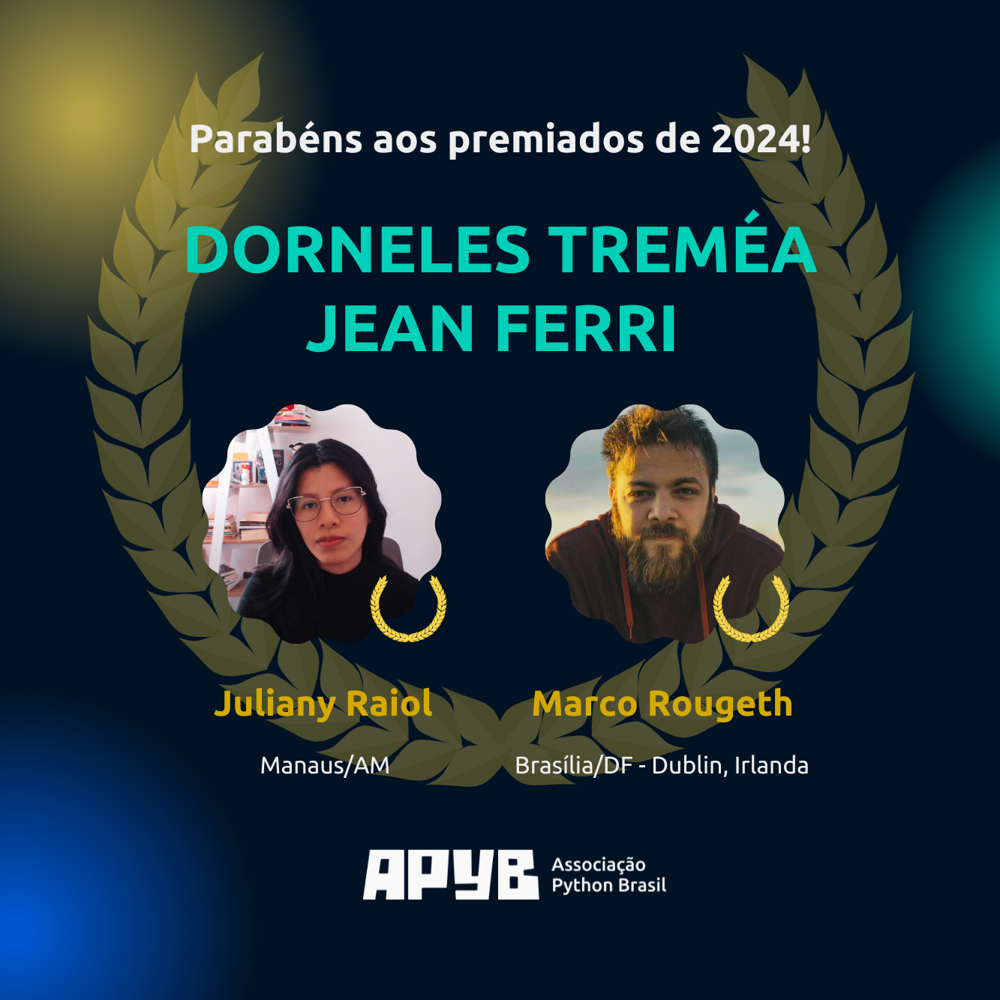
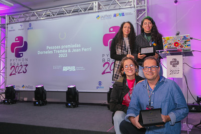
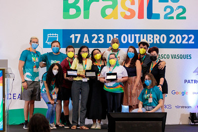

Prêmio Dorneles Treméa | Jean Ferri#
O Prêmio Dorneles Treméa/Jean Ferri é concedido anualmente à pessoa membra ou às pessoas membras da comunidade Python brasileira que mantêm vivo o espírito de colaboração, empreendedorismo e entrega à comunidade. As indicações são feitas pela comunidade e a Cerimônia de Entrega ocorre durante a Python Brasil.
O Prêmio#
Criado em 2011 pela Associação Python Brasil, o Prêmio Dorneles Treméa|Jean Ferri é um momento para a comunidade Python brasileira lembrar e homenagear anualmente a pessoa ou as pessoas que mais se destacaram e contribuíram para manter vivo o espírito de colaboração, empreendedorismo e entrega à comunidade que eram características marcantes de nossos colegas Dorneles Treméa e Jean Ferri.
Critérios utilizados#
O prêmio é dedicado àquelas pessoas que, durante os últimos doze meses, se dedicaram a:
Divulgar e ensinar Python
Participar ativamente das comunidades locais
Participar ativamente das comunidades online
Estão excluídos da seleção:
A diretória atual da APyB
Big Kahuna e organizadores da Python Brasil
Homenageados em anos anteriores
Cerimônia de entrega#
A entrega do Prêmio Dorneles Treméa|Jean Ferri é realizada anualmente durante a Python Brasil.
Homenageados#
2025 - Python Brasil 2025 (São Paulo - SP)#
Adorilson Bezerra
Rafahela Bazzanella
Thais Viana

2024 - Python Brasil 2024 (Rio de Janeiro - RJ)#
Juliany Raiol
Marco Rougeth

2023 - Python Brasil 2023 (Caxias do Sul - RS)#
Alynne Ferreira
Ana Cecília Vieira
João S. de O. Bueno
Juliana Karoline
Rafael Fontenelle
Ryllari Marques

2022 - Python Brasil 2022 (Manaus - AM)#
Bianca Rosa
Lidiane Monteiro
Melissa Weber

2021 - Python Brasil 2021 (Edição Online)#
Eduardo Mendes (Dunossauro)
Jessica Temporal
Letícia Portella
2020 - Python Brasil 2020 (Edição Online)#
Débora Azevedo
Felipe de Morais
Mário Sérgio
2019 - Python Brasil 2019 (Ribeirão Preto - SP)#
Pyladies São Paulo
Álvaro Turicas Justen
Leonardo Rochael
2018 - PythonBrasil 14 (Natal - RN)#
Filipe Cifali
Humberto Rocha
Rudá Porto Filgueiras
2017 - PythonBrasil 13 (Belo Horizonte - MG)#
Jean Rodrigo Ferri
Bruno Rocha
2016 - PythonBrasil 12 (Florianópolis - SC)#
Paula Grangeiro
2015 - PythonBrasil 11 (São José dos Campos - SP)#
Tânia Andrea
2014 - PythonBrasil 10 (Porto de Galinhas, Ipojuca - PE)#
Osvaldo Santana
2013 - PythonBrasil 9 (Brasília - DF)#
Fernando Massanori
Henrique Bastos
2012 - PythonBrasil 8 (Rio de Janeiro - RJ)#
Érico Andrei
Marcel Caraciolo
2011 - PythonBrasil 7 (São Paulo - SP)#
Luciano Ramalho
Rodrigo Senra
Sobre Dorneles Treméa#
Gaúcho, colorado, amante de sushi e de suco de maçã, empreendedor, líder de comunidades OSS, desenvolvedor, empreendedor, marido e pai de duas gurias.
Déo, como os mais próximos o chamavam, foi fundador da Debian-RS, da Associação Python Brasil, membro da Plone Foundation, Big Kahuna da PythonBrasil[5] e palestrante constante.
Era o presidente da Associação Python Brasil quando faleceu em um acidente de carro em 10 de fevereiro de 2011 - na época, com 31 anos.
Sempre disposto a ajudar, ele será sempre lembrado por sua disposição para compartilhar conhecimento. Seu legado é o espírito de entrega e dedicação que norteia a existência da Associação Python Brasil.
Leia mais sobre Dorneles Treméa:
Sobre Jean Ferri#
O gaúcho Jean Rodrigo Ferri foi uma das primeiras lideranças da comunidade Python no Brasil. Criador do TcheZope.org, o primeiro site sobre Zope e Plone em português, ele foi Big Kahuna da PyCon Brasil 2006 e um dos organizadores da PythonBrasil 2013, além de ser co-fundador da Associação Python Brasil.
Jean foi um dos idealizadores do domínio do Legislativo na internet (.leg.br) e teve participação efetiva na gestão e no desenvolvimento da maioria dos produtos ofertados pelo programa Interlegis, além de ter liderado a criação do Portal Modelo – solução utilizada por mais de 1500 câmaras legislativas no Brasil.
Leia mais sobre Jean Ferri: